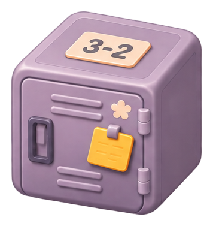

Root Title
title / root · 26/34 · 700갓생패치 · SEED v0.15 · 컴포넌트 패밀리
기존 색상과 수치를 유지한 채 같은 계열의 역할, 크기, 상태, 조합을 비교합니다. 실제 제품 화면이나 디자인 승인 결과는 아닙니다.
01 · C-TEXT + F-TYPE
의미 역할 5개, 시각 스케일 10개. 서체는 기존 시스템 폰트.
title / root · 26/34 · 700title / standard · 18/26 · 600클랜 상세
display / hero · 24/32 · 700이번 주의 기록
display / number · 24/32 · 7001,240
section · 18/26 · 700오늘의 활동
body / item · 16/24 · 600일본어 단어 복습
body · 16/24 · 400목표를 나누어 실천하고 진행을 기록합니다.
caption / support · 14/20 · 400어제 오후 6:20 · 최근 업데이트
caption · 12/18 · 500보조 안내
body / number-small · 16/24 · 60012,600
의미상 제목과 실제 크기는 독립입니다. 긴 소개문을 Hero로 키우거나 문단 전체를 브랜드색으로 강조하지 않습니다. 숫자는 같은 표기 폭을 사용합니다.
02 · C-ACTION + P-ACTIONS
기존 허용 6종. 높이·아이콘·상태·너비는 독립 속성입니다.
주요 행동 1개
중립적 대표 확정
일반 실행
보조 행동
부가 설명·이동
기존 서브브랜드 톤
아이콘 + 라벨
Loading / 자리 유지
Disabled / 실제 비활성
Brand Weak와 Brand Outline은 과거 문서에만 존재한 후보로, 아래 실험 영역에서만 활성화됩니다. Critical은 의미색/대비 승인 전 미구현입니다.
03 · C-STATUS
상태는 표시하고, 선택은 컨트롤로 처리합니다.
실제 값과 표시 폭
620 / 1,000
Micro · 6px
Default · 10px
Featured · 12px
초과 기여는 숫자로 남고, 막대는 100%까지만 채웁니다.
04 · C-FIELD / C-CHECK / C-RADIO / C-SEGMENT
컴포넌트 모양보다 동작의 의미를 먼저 구분합니다.
선택 상태
같은 데이터의 보기 전환
오늘 · 기본 정보
05 · C-LIST + C-IMAGE
같은 정보 축, 다른 콘텐츠. 미디어는 상태와 비율을 보존합니다.
이번 주 학습 기여
기록 예제 · 비교 행
여러 줄로 이어질 수 있는 활동 설명을 포함한 예제
메타 정보를 숨기지 않고 줄바꿈합니다.
보조 행동이 따로 있는 정적 행
부모 행에는 가짜 클릭 없음

학교 사물함
A1 / contain
나무 상자
A1 / contain
빛나는 상자
A1 / contain
06 · C-SURFACE + C-ICON
공간 배치가 아닌 표현 역할 10종. 아이콘은 원본 SVG를 재사용.
Plain
배경 없는 섹션
Solid
독립된 정보 묶음
Outlined
경계를 드러내는 면
Subtle
약한 그룹
Inset
안쪽 구역
Raised
상위 면
Media
이미지 중심
Reward
보상 의미에 한정
Overlay
겹침 우선면